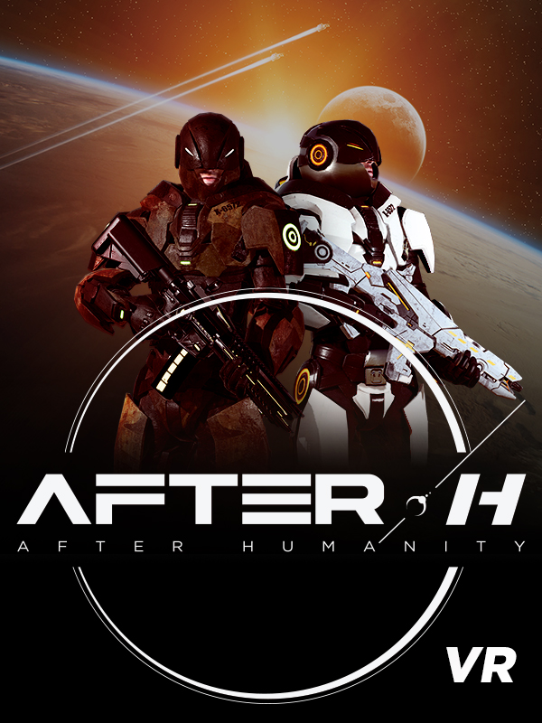

AFTER-H
AFTER-H
Details
|  | |
| Playtime | Not Played |
| Last Activity | Never |
| Added | 21/04/2020 |
| Modified | Never |
| Completion Status | Not Played |
| Source | Steam |
| Platform | PC |
| Release Date | 23/09/2019 |
| Community Score | 56 |
| Critic Score | |
| User Score | |
| Genre | Action Early Access Free to Play Indie |
| Developer | SmartVR Studio |
| Publisher | SmartVR Studio |
| Feature | Multiplayer Online Pvp Pvp VR VR Keyboard / Mouse VR Motion Controllers VR Motion Controllers VR Room-Scale VR Standing |
| Links | PCGamingWiki Community Hub Discussions Guides Store Page News |
Description
Patch notes for AFTER-H ARCADE (V1.0.5.12) (10/08/2020) (27.44 Mo*)

GENERAL UPDATES VALVE INDEX FULL SUPPORT
- It is now possible to change weapons with the Valve Knuckles.
- Snap-turn and movement controls have been improved on Valve Knuckles.
BUGFIXES
The previous update included the correction of a number of bugs reported by our players and reported internally, which we summarize below:
GAME BREAKER
- In DOM, fixed a set of synchronization bugs concerning the state of the objectives which occured when a player joined an ongoing game.
- In DOM, fixed a set of UI bugs which occured when a player was capturing an objective.
- Fixed a bug that blocked players at their spawn point at the beginning of the game.
MISCELLANEOUS
- Voice-over announcements no longer play two times in TDM.
- In VR arcades when using left-handed mode, hands are no longer reverted when returning to the lobby.
DEVELOPERS’ NOTE
(*) The size of the file may slightly differ depending on the platform it's downloaded from.
Patch notes for AFTER-H ARCADE (V1.0.5.9) (20/07/2020) (3.8 Go*)

New features:
- New map: CERES II


Discover CERES’ spaceport, a strategic point in the battle to dominate the solar system. The factions confront each other in and outside of the spaceport, trying to gain control over it !
- New weapon: Vulcan

A long and medium-range assault rifle firing 3-round bursts. Its range and precision are a cut above the MX-42, with a lower fire rate.
- New Specialty: DX-3 Grenade

A specialty (Selectable loadout in addition to two primary weapons) that is lethal for opponents that are too close to its blast radius. The damage decreases the further you are from the explosion point. Cooldown time: 45 seconds.
Only the grenade is available at the moment. Stay tuned for more specialties in future updates.
- Comfort
Added comfort options for people sensitive to motion sickness:
- Snap Turn: It is now possible to use the joystick to move the POV (Point of view).
- Movement: It is now possible to choose an element of the avatar (head, dominant hand, secondary hand) to guide the movement.
- Sensitivity setting: It is now possible to adjust the level of sensitivity to motion sickness (from “not sensitive” to “very sensitive”).
- New weapons interface

Indicates the number of bullets remaining in the magazine, as well as the cooldown time of the grenade.
- New armor skin: E GO Armor

General Updates:
UI Rework of the “Spectator” mode.
Graphic rework.
Best performing player display (MVP).
Rework of the “Settings” menu.
Added comfort options.
Division of options into several parts (game, mobility, sound, video).
The Voice Chat has been adjusted.
The “Legend of Mars” shotgun is now called “T1-GAUSS”.
Balance changes:
- MX-42
Reduced the number of bullets per magazine from 50 to 35.
Bullets deal maximum damage up to 15 meters, which then gradually decreases up to 100 meters, where the damage reduction is 100%.
- Needle
Bugfixes:
The previous update included the correction of a number of bugs reported by our players and reported internally, which we summarize below:GAME BREAKER
- It is now impossible to fire when a weapon is inside an obstacle.
- In Domination mode, the capture of a point starts as soon as a player is on it (whereas previously, you sometimes had to wait up to a second).
- Life automatically regenerates even when you’re shooting.
- Players can no longer lose their lives when they are in spawning area.
Maps
THE CLIFF- Correction of a bug that caused death by crouching under a few spots on the map The Cliff.
COLISEUM
- The door of the map Coliseum is now open/closed for all players.
- It’s no longer possible to get stuck inside the pillar near the stairs.
- It’s no longer possible to fall from the stairs and get stuck between pillars on the rebel side of the map.RUIN’S BAY
- It is no longer possible to crouch under the stone stairs near capture point A.
MISCELLANEOUS
- It is no longer possible to get 2 weapons at the same time when you switch between shotgun and another weapon.
- Collision between player and shotgun has been removed.
- The game no longer crashes when a player commits suicide in the tutorial.
Developers’ Note
*The size of the file may slightly differ depending on the platform it's downloaded from.
About the Game
fps + Esport + Vr + Free to Play
Mars, 2080. Two human factions are fighting over key strategic points in the Solar System. Join the Martian battlefields and fight as the Alliance or the Rebels in a competitive fast-paced FPS. Gather your crew in Team Deathmatch mode to overtake a space ship crash site on Mars. Play solo against other players in a FFA match or take control of ancient artifacts playing Domination mode!
join the Fight Now!
core Gameplay
- 100% competitive gameplay - only skill and collaboration matter.
- Experience realistic manipulations and futurist gun fighting.
- Fight all over the solar system, indoor and outdoor.
- Play solo or with friends in various multiplayer modes - 2 to 8 players.
- No ingame static HUD, all elements and information are integrated in VR.
- Regular updates of content (maps, weapons, skins, features)
- eSport focus: competitions and events for both steam players and VR Arcade places
Current State (ea 1.0.5.9 - July - 2020)
- Four Maps : The Cliff / Ruins Bay / Coliseum / CERES II
- Four Weapons : MX42 (assault rifle), The Needle (precision rifle), T1 Gauss (shotgun), Vulcan (assault rifle)
- One Specialty : DX-3 (grenade)
- Three game modes : Team Deathmatch, Free-for-All and Domination
- Character & weapons skins
- Accounts with a leveling system
- Complete UI/UX to create/join games
- Basic settings to change name, calibrate size, sound, motion sickness sensibility
- Can be played with both left and right hand
- Navigate in menus in Desktop or VR, it's up to you.
- Multiple languages: English & French
- Complete observator system with player view, free cam, kill feed, team scores etc...
- Complete overlay for streamers including important information of the current game, KDA, time remaining...
To make the game as smooth as possible during the early access, games will be opened. You will be able to join games, even if they already started.
what Are We Working On?
- Account system with leveling rewards and ranked games/leaderboards.
- More gameplay/features such as abilities, tactical skills, social actions...
- New maps on Earth, Io, in space...
- More weapons such as pistol, long range rifle, bow...
- New game modes
Available for Arcades on SpringboardVR